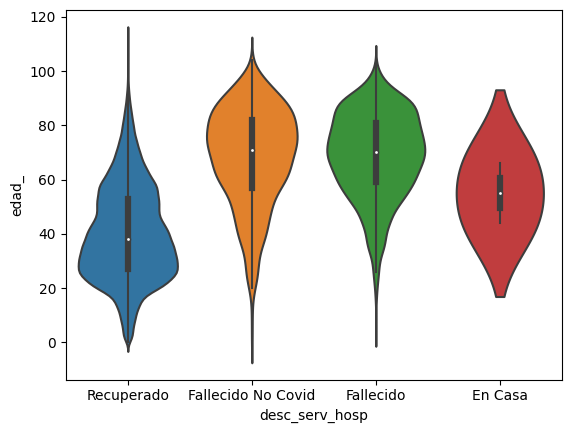

Integrantes | EQ4
José David Martínez Fernández
Soy de San Jacinto, Bolívar, tengo 17 años y me interesa la tecnología y la programación.
José Manjarrez
Estudiante de primer semestre de Ingenieria de Sistemas, 17 años de edad, nacido en Valledupar, cesar.
Sebastian Mercado
Tengo 17 años, soy estudiante de primer semestre de ingeniería de sistemas y me gusta en mis ratos libres ir al gimnasio y me interese por esta carrera debido a varios factores como mi interés en los videojuegos y en la tecnología.
Erick Mendoza
Erick de Jesús Mendoza Arrieta código estudiantil: 200198987
Fabian Mazenet
Tengo 17 años, soy de Santa Marta pero estudio en Barranquilla, me gusta escuchar musica y programar. Codigo de estudiante: 200198392
Objetivo general
Analizar el comportamiento que ha tenido el virus del Covid-19 en la ciudad de Bucaramanga, según los datos recopilados en el intervalo del 2020 hasta el 2022.
Objetivo especifico
Investigar la relación de algunas de las variables recopiladas en el informe como las edades con más contagios o más afectadas por la pandemia y su distribución en el tiempo.
Hipótesis
El virus del Covid-19, tiene una mayor mortalidad en personas mayores, aunque la mayoría de los contagios se presentan en personas más jóvenes.
Estudio
Mortalidad y atención clínica en relación con la edad

De las personas infectadas por Covid-19, la mayoría de recuperados según la edad son los más jóvenes, alrededor de los 20 años. Mientras que la probabilidad de que una persona fallezca, aumenta de acuerdo con la edad, las personas fallecidas en su mayoría fueron adultos mayores que estuvieron en el rango de los 60 a 99 años, igualmente los hospitalizados en su mayoría fueron adultos mayores.
Distribución por género
Si tenemos en cuenta la distribución por género, se nota una mayor densidad de género en el sexo femenino en un rango de edad entre los 20 y los 45 a diferencias de los hombres. Y por otra parte el conteo es mayor en el sexo femenino con una diferencia aproximadamente de 10000 a comparación del sexo masculino.
Edades más afectadas
Las edades más afectadas en cuanto a cantidad de contagios, fueron las personas en edad adulta, los cuales representan el 55% del total de contagios, seguido de los jóvenes con un 20.7%, y en la otra parte esta las personas mayores que se encuentra cerca de la edad de los jóvenes.
Distribución de los contagios respecto al tiempo

Los contagios mediante los distintos años ha sido un poco elevado en el inicio de 2020 y luego sube considerablemente en el año 2021, alcanzando su punto máximo con una cifra de 80000, en el año 2022 se ha visto más reducida bajando a una cifra similar a los inicios de pandemia. Además, podemos observar en esta gráfica de manera más específica el conteo de contagios en semanas de pandemia donde los picos más altos de datos son aproximadamente en la semana 2,3 y 4, y luego en las semanas 23, 24,25 y la semana 26. Así mismo se ven más bajo los datos de contagios, entre las semanas 10 y 15.
Conclusión
Con este estudio, podemos llegar a la conclusión, de que en el período 2020-2022, las personas en edad adulta fueron los más contagiados, mientras que la mayor mortalidad estuvo en las personas mayores, además los contagios se concentran principalmente en los períodos de inicio de la pandemia y en el período de la semana 24 en el 2021.